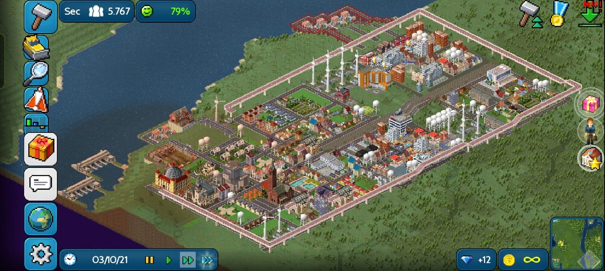
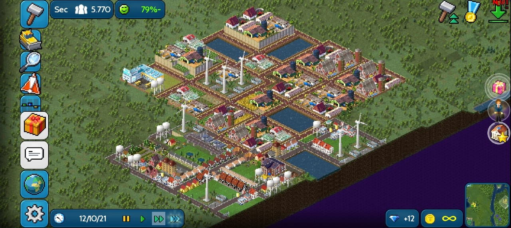
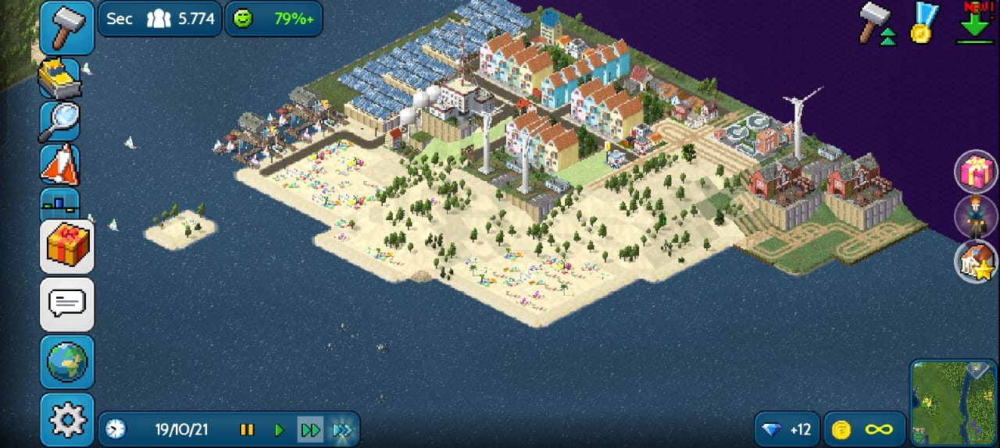
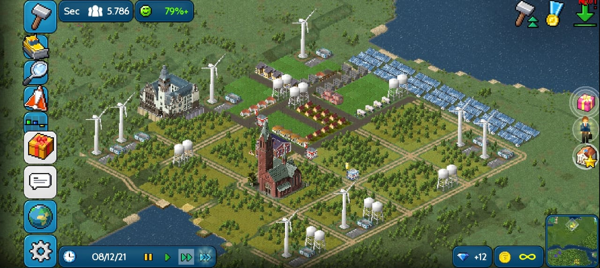
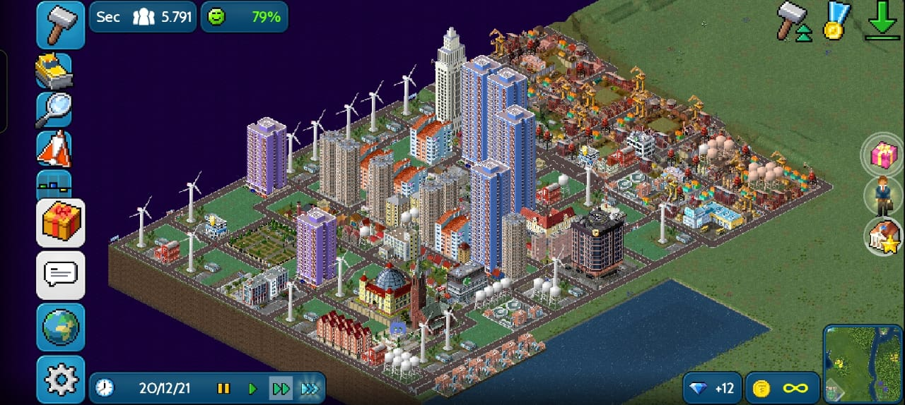
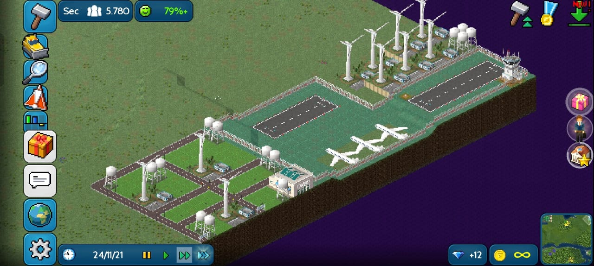

Cidades inteligentes utilizam tecnologia, dados e conectividade para melhorar a infraestrutura urbana, otimizar serviços públicos e elevar a qualidade de vida dos moradores. Por meio de redes de sensores, inteligência artificial e a Internet das Coisas (IoT), essas cidades gerenciam de forma eficiente o trânsito, o consumo de energia, a gestão de resíduos e a segurança pública, promovendo o desenvolvimento sustentável e o uso consciente dos recursos.
O projeto utiliza um aplicativo já existente como base para a criação de uma cidade inteligente virtual, utilizando o aplicativo TheoTown. A iniciativa aproveita as ferramentas e a infraestrutura do aplicativo atual para simular, testar e implementar dinâmicas urbanas digitais, conectando funcionalidades como gestão de recursos, mobilidade, serviços comunitários e interação entre usuários em um ambiente virtual integrado.
Foco Estratégico da Cidade Virtual:
A ideia do projeto Kayon nasceu da necessidade de compreender e aplicar, na prática, os conceitos de urbanismo sustentável e cidades inteligentes. Diante dos desafios crescentes de superpopulação, gestão de recursos e poluição nas metrópoles atuais, a proposta do grupo é utilizar a simulação como ferramenta de teste e aprendizado. Integrando tecnologia de ponta, energias limpas e infraestrutura otimizada em um único ambiente virtual, o projeto busca demonstrar como o planejamento digital preventivo pode criar ambientes urbanos mais eficientes, inclusivos e humanos para as próximas gerações.
A cidade inteligente Kayon, projetada no simulador TheoTown, foi concebida como um modelo urbano que une sustentabilidade, eficiência tecnológica e qualidade de vida. Planejada de forma modular, Kayon integra redes avançadas de energia renovável, saneamento automatizado e mobilidade urbana inteligente em um ecossistema totalmente conectado. Cada zona da cidade foi estruturada de maneira estratégica para otimizar os recursos públicos e oferecer infraestrutura completa para seus moradores, servindo como uma demonstração prática de como a tecnologia pode transformar o futuro da vida urbana.

Contendo energia renovável (eólica, hidrelétrica), água por meio de canos subterrâneos e caixa d'água, aterro para o lixo, muitas casas e alguma áreas de lazer, delegacias pequenas, escolas pequenas, bombeiros pequenos e hospitais pequenos e alguns tipos de transporte

Contendo pequenos negócios de agropecuária, além de energia renovável e água por meio de canos subterrâneos e caixas d'aguas

Localizada na praia da cidade, contendo energia renovável (principal: placas solares), bomba de águas e área para barcos

Uma área mais simples e arborizada, com pouca população e negócios

Sendo os dois bem intensos, com grande volume de comércios e edifícios. Contém energias renováveis, pontos de transporte, áreas de lazer, escolas maiores, hospital grande, bombeiro, delegacia e bombas de água e caixa d'águas

Contendo aviões, energias renováveis e água.
O projeto Kayon foi idealizado e desenvolvido pelos estudantes Emily Bresciani Gonçalves, Felipe Rovesta, Gustavo Müller Santos, João Vitor Medeiros Araújo e Yasmin Cupari Rodrigues. Trabalhando em equipe, os desenvolvedores uniram visão estratégica, pesquisa técnica e criatividade para planejar cada detalhe da cidade no simulador TheoTown e estruturar a apresentação completa da plataforma web.